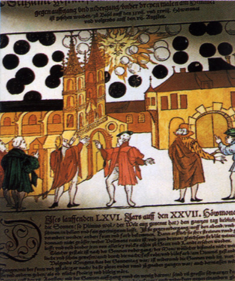

Gravure représentant les globes noirs aperçus dans le ciel de Bâle

Aoû
De nombreux citoyens de Bâle (Suisse),
effarés, peuvent voir pendant plusieurs heures des sphères noires se livrant à une formidable bataille
aérienne, envahissant le ciel de leur cité : on a vu dans l'air beaucoup de grosses boules noires
qui se dirigeaient à grande vitesse vers le soleil,
puis qui firent demi-tour, s'entrechoquant les unes les autres comme si elles menaient un combat, un grand
nombre d'entre elles devinrent rouges et ignéesArdentes, par la suite
elles se consumèrent et s'éteignirent, écrivit Samuel Coccius, l'étudiant en "écritures sacrées et en
arts libéraux" qui consigna les étranges événements dans la gazette de la ville Gravure d'époque ci-contre, collection
Wrckiana, Zurich.